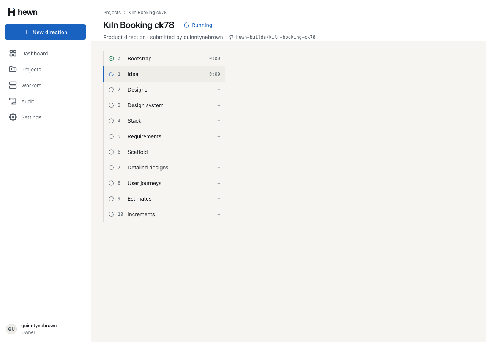
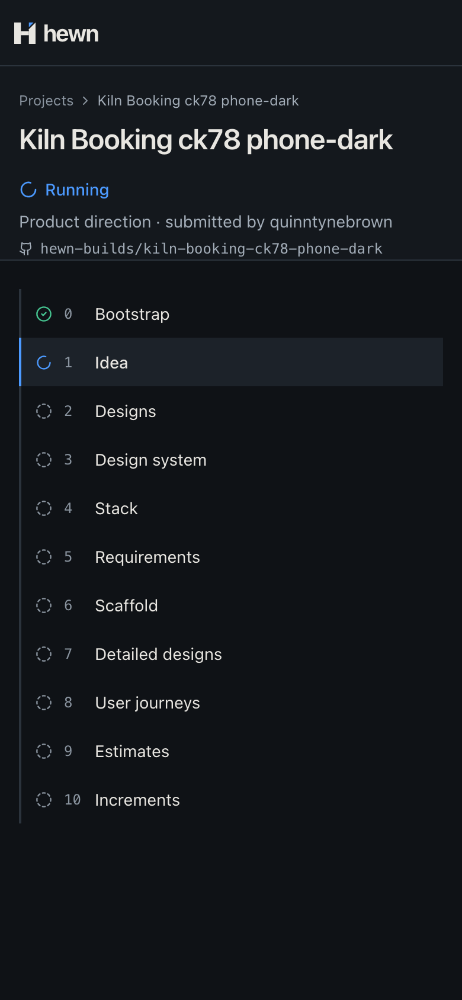

Stage 0 creates the private repository and installs the Greenlit skills, with a lock file that records exactly what it copied.
Reads and writes go through the API; the installation token never leaves it.
var name = FormatName(project.Name);
var existing = await gitHub.FindAsync(owner, name, cancellationToken);
if (existing is null)
{
await gitHub.CreatePrivateAsync(owner, name, Describe(project.Idea), cancellationToken);
}
else if (!existing.Topics.Contains(Topic) || existing.CommitCount > 1)
{
throw new GitHubException($"{owner}/{name} already exists and was not created by Hewn.");
}
project.AttachRepository(owner, name);
private static readonly Dictionary<int, (string[] Prefixes, string[] Exact)> ByStage = new()
{
[0] = ([".claude/skills/", ".agents/skills/"], [".hewn/skills.lock"]),
};
Key {run}/{step}/commit: a repeated request returns the first SHA. Any other path: 400 path_not_allowed.
for (const root of SKILL_ROOTS) {
for (const skill of await directories(join(clone, root))) {
if ((existing[root] ?? []).includes(skill)) {
await context.log('info', `kept existing: ${root}/${skill}`);
continue;
}
for (const file of await filesUnder(join(clone, root, skill))) {
files.push({ path: toRepoPath(relative(clone, file)), content: await readFile(file) });
}
copied.add(skill);
}
}
await context.commit(COMMIT_STEP, `Bootstrap skills from greenlit@${sha.slice(0, 7)}`, files);
{
"source": "file:///…/backend/.e2e/greenlit",
"sha": "6007ab18a54e521394a2fe25a7ce9e46690d56f3",
"skills": ["estimating-designs", "grilling"]
}
From an e2e run against the Greenlit fixture.
Create, adopt, taken name, path rules, idempotency, stale epoch, redacted logs
A real local git repository stands in for Greenlit
Stage 0 runs for real; the link appears live

